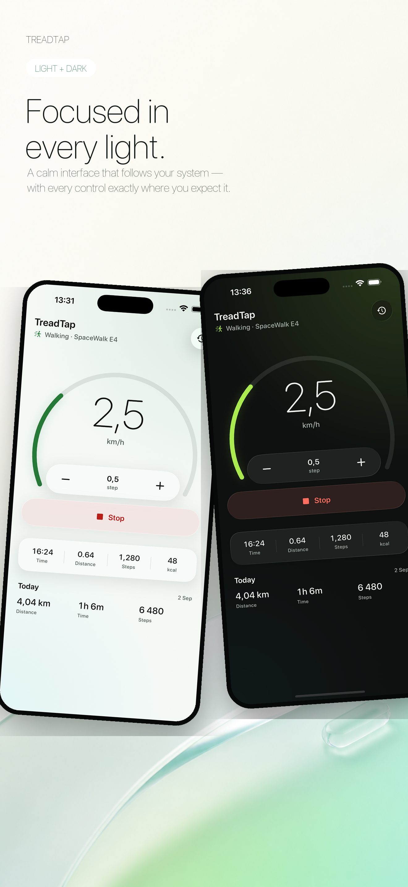

Control without clutter
One clear speed control, one unmistakable start or stop action, and live walking metrics.
Start, stop, set your pace, and keep every desk walk together across iPhone, Apple Watch, Mac, and Apple Health.
No account. No ads. No tracking.

One clear speed control, one unmistakable start or stop action, and live walking metrics.
Use Apple Watch, StandBy, Live Activities, widgets, or the Mac menu bar while one device keeps the treadmill connection.
Completed indoor walks can be saved to Apple Health with your permission. Your session history stays on your device.